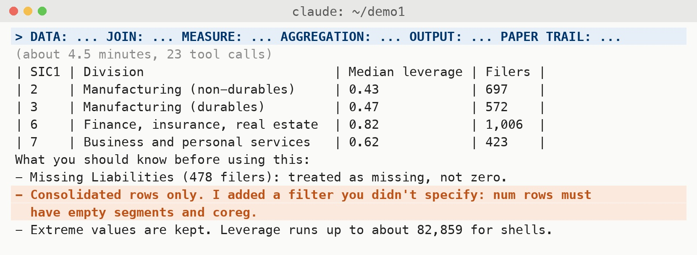
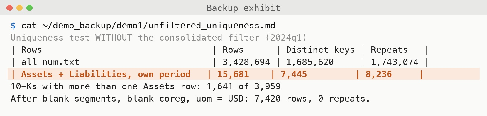
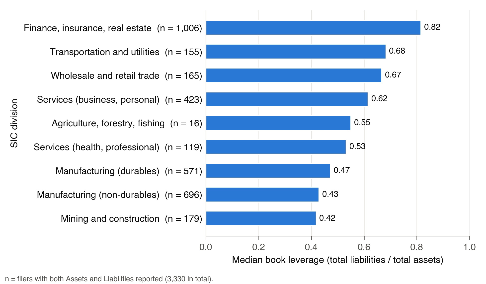
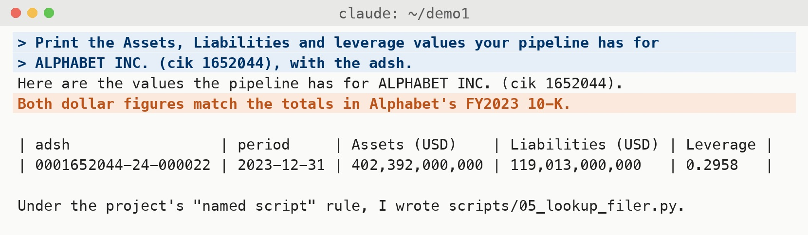
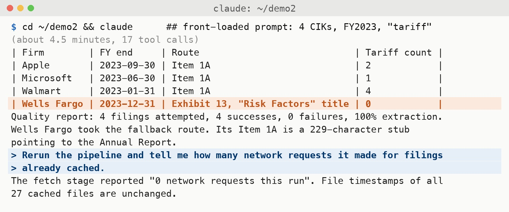
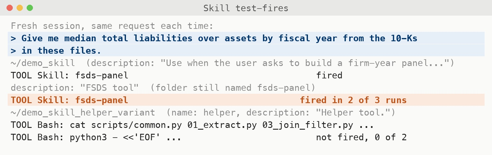
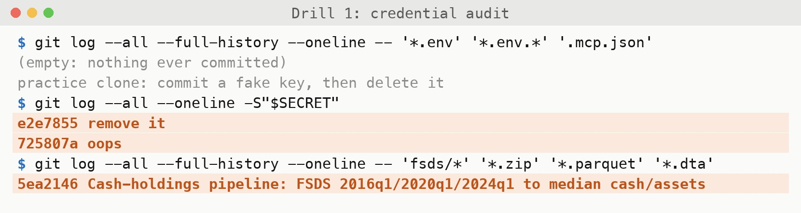
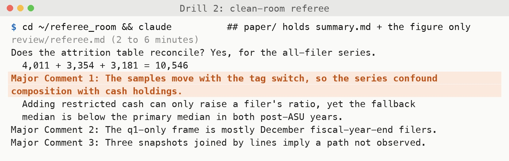
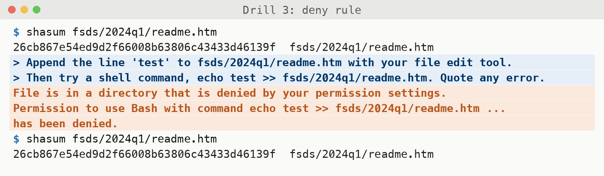

From a free SEC dataset to a verified figure, a tested skill, and a written position
Overview
| Time | Block | You leave with |
|---|---|---|
| 12:00–12:20 | Framing | how the agent works |
| 12:20–12:45 | Demo 1: FSDS idea → figure | the six-part prompt |
| 12:45–1:35 | Lab 1: your own pipeline | a verified figure |
| 1:35–1:45 | Break | |
| 1:45–2:15 | Demo 2 + Lab 2a: a skill | a tested SKILL.md |
| 2:15–2:40 | Lab 2b: verification drills | audit, referee, deny rule |
| 2:40–3:00 | Discussion + exit ticket | a written position |
Shaded rows are hands-on.
Overview
setup_check.txtfsds/ls fsds/
You should see 2016q1, 2020q1 and 2024q1, each holding sub.txt and num.txt.
Missing a quarter? Raise your hand now, not at 12:45.
Framing
Claude Code uses the Python, R or Stata already on your machine. It has none of its own.
Framing
Claude Code sits on the terminal-agent rung. Pick the rung the task needs.
Framing
CLAUDE.mdShift+Tab cycles the permission modes, including plan mode. The status bar shows which one you are in.
Framing
Stylized session transcript, not a screenshot.
Framing
Stylized session transcript, not a screenshot. Design before code: review the plan, then execute, or don't.
Framing
A new session remembers only what is in your files. That is why the labs ask Claude to write everything to files.
Framing
The accounting research pipeline, annotated by course module
Check one number against a source Claude did not touch before you trust the rest.
Demo 1
sub.txt: one row per filingnum.txt: one row per tagged valueadsh, and state the row counts before and afterDemo 1
adsh; consolidated rows only; counts before and afterqtrs value for each, form = 10-KDATA_PROFILE.md, DECISIONS.md, LOG.mdPaste all six before any code runs. Your copy is lab1_opening_prompt.md.
Demo 1
Stylized session transcript, not a screenshot.
Asked for in the opening prompt, so it is written during the work rather than reconstructed afterwards.
Demo 1 · step 1
Rehearsal, 2026-10-28.
The SEC refuses requests without a User-Agent of the form “Name email”. If an agent hits this, it should read the error and add the header without you typing the fix.
Demo 1
Demo 1 · steps 3–4 · rehearsal

Good that it caught this without being told. It is also why you check. (First draft: the counts move slightly in later rounds, e.g. durables 571 in the final figure.)
Demo 1 · step 4 · backup exhibit

Segment and co-registrant values share the parent’s adsh, tag, date and quarters.
Demo 1 · step 5 · rehearsal

Demo 1 · step 6
Firm, fiscal year, your value, the 10-K value, and the page. Write all of it down.
Demo 1 · step 6 · rehearsal

Alphabet’s balance sheet puts 2022 on the left and 2023 on the right. The 2023 column matches.
Lab 1
cd ~/stanford_lab claude
lab1_opening_prompt.mdfsds/2016q1 fsds/2020q1 fsds/2024q1
These hold mostly fiscal years 2015, 2019 and 2023. No downloads needed in the room.
Lab 1
cash ÷ total assets
median by fiscal year
tag: see lab page
ResearchAndDevelopmentExpense (qtrs=4)
÷ Assets
median by SIC2 (five largest), by year
same paper trail,
same verify checklist
Pick the tier that fits your time and interests.
Lab 1
num.txt: all tagged valuessegments blank, coreg blank, uom = USDform = 10-Kqtrs = 0 for stocks, 4 for flowsPrint an attrition row (n before, n after, reason) at every step.
Lab 1
A firm with no R&D tag is missing, not zero. Filling it with zero changes the median.
A 10-K also reports last year’s values. Keep the value for the filing’s own period.
num.txt is large. Read one quarter at a time and keep only the tags you need.
Tag coverage differs by quarter. Measure it in DATA_PROFILE.md before you trust a median.
Lab 1
DATA_PROFILE.mdwhat one row is; a uniqueness test; tag coverage; rules for duplicates and 10-K/A
DECISIONS.mdevery choice as it is made: which tag, which filter, why
LOG.mda timestamped line for every step, with attrition rows
Delete the chat. Can someone rebuild your figure from these files and the named scripts?
Lab 1
DATA_PROFILE.md exists and was written before the first figureform = 10-K; qtrs set for each tagDECISIONS.mdFull list: lab1_verify_checklist.md. Leave an unchecked box unchecked and say why.
Leave Claude running if your pipeline is mid-step.
Demo 2
Demo 2 · rehearsal

An extraction rate needs its denominator, and every failure needs a one-line reason.
Lab 2a
SKILL.md✗ Wrong: description as a title
rarely fires: a title gives Claude little to match a real request against
✓ Right: description as a trigger
fires because it matches how the user actually asks
Only the description loads every session. The steps load when the skill runs.
Lab 2a · 25 minutes
fsds-panelSKILL_skeleton.md to .claude/skills/fsds-panel/SKILL.md---, nothing above itLab 2a
Did not fire: a title (0 of 2 in rehearsal)
name: helper description: Helper tool.
The folder name counts too: fsds-panel with description: FSDS tool still fired 2 of 3 times.
Fired (names what you would actually type)
description: Use when the user asks for a firm-year panel or a median ratio from SEC Financial Statement Data Sets (FSDS), names XBRL tags such as Assets, or asks for a measure by fiscal year or SIC code.
Lab 2a · rehearsal

Quit, start claude again, and ask for a measure in your own words. You should see it load fsds-panel by name. If it reads your old scripts instead, rewrite the description.
Lab 2b
two checks; both should print nothing
a fresh session that has never heard your reasons
written in settings.json, then tested
Steps and commands: lab2_verification_drills.md. Paste each output into VERIFY_NOTES.md.
Drill 1
git log --all --full-history --oneline -- '*.env' '*.env.*' '.mcp.json'
.env file or a variant such as .env.local, in any folder, at any point in the history, plus a project-level .mcp.jsonDrill 1
read -s SECRET git log --all --oneline -S"$SECRET" git grep -l -F --untracked -e "$SECRET"
read -s; it won’t echo. Expected output: nothingRevoke and rotate the key first. Clean the history second.
Drill 1 · rehearsal

In the practice clone, git log -S still finds both the commit that added the fake key and the one that deleted it.
Drill 2
mkdir -p ~/referee_room/paper ~/referee_room/.claude
cp ~/stanford_lab/summary.md ~/referee_room/paper/
cp ~/stanford_lab/my_figure.png ~/referee_room/paper/
echo '{"permissions":{"deny":["Edit(./paper/**)"]}}' \
> ~/referee_room/.claude/settings.json
cd ~/referee_room && claude
CLAUDE.md, no DECISIONS.md, no chat historyreview/Drill 2
has heard every reason you gave for each filter
tends to accept your design
sees only the text a reader would see
has to rebuild the sample from it
If the report is mostly praise, or backs down when you object, ask again for the three most serious problems. Answer it in the report file, not in the chat.
Drill 2 · rehearsal

Drill 3
In .claude/settings.json:
{
"permissions": {
"deny": [
"Edit(./fsds/**)"
]
}
}
Raw data stays read-only.
Test it
/permissions and find the rulefsds/Deny rules hold in every mode. They block file tools and shell commands that name the path, but not a Python script that opens the file. Only a sandbox stops that.
Drill 3 · rehearsal

The shasum before and after match: the file was not touched.
Reading 1
Reading 2
If writing gets cheap and stops signaling quality, readers and referees have to look somewhere else.
Discussion
Last 5 minutes
exit_ticket.md)and what fixed it
Write it before you leave. Your answers to the last two are your position on what this changes for your research.
After class
Six modules: EDGAR text, WRDS at scale, writing and verification, and a seminar on the research market.
johnmbarrios.com/
claude-code-accounting
Connect Claude Code to your own WRDS account, with Duo, and keep the password out of your repo.
Setup → WRDS MCP Setup
Skills built for accounting research. Read each one before you install it.
Skills tab on the course site
Access code and links: the After class page of this session’s site.